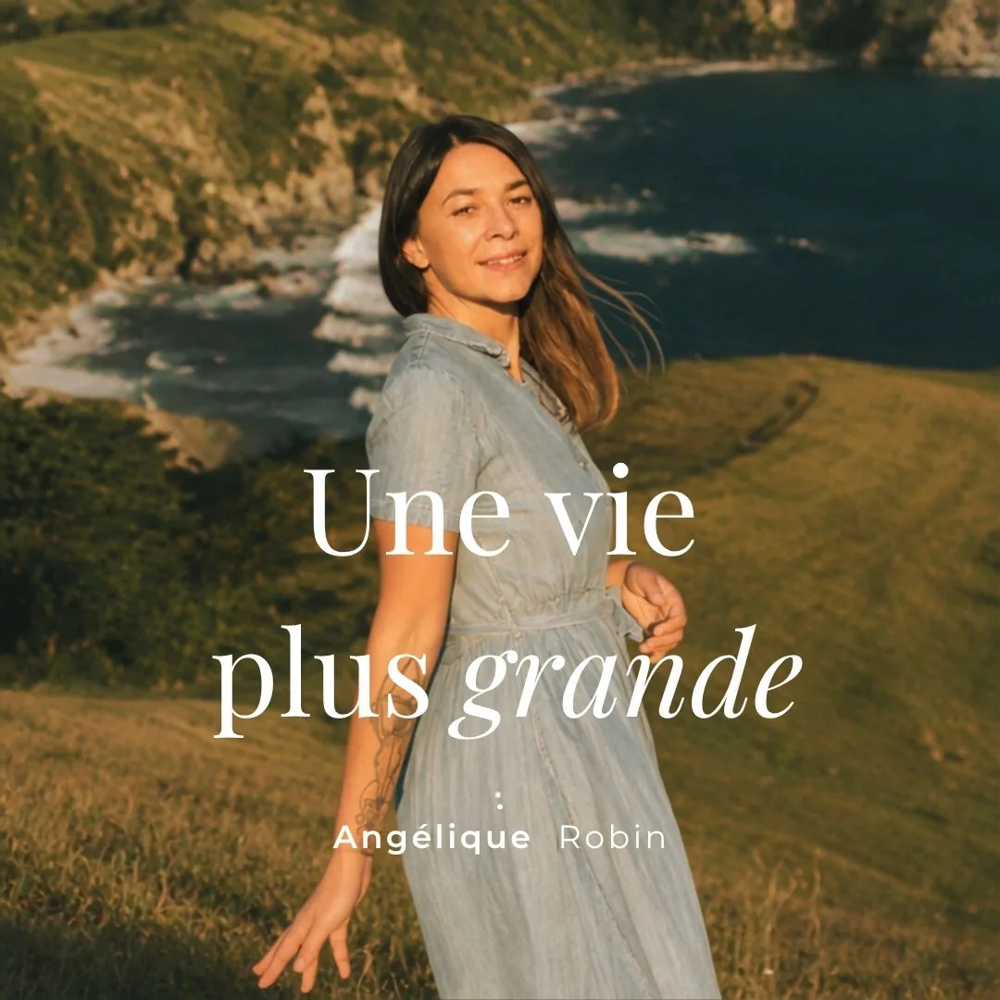

Il y a des saisons où l’on sent qu’une vie plus grande nous attend, d’autres où l’on cherche à retrouver le fil, et d’autres encore où l’on aimerait que son entreprise nous porte au lieu de prendre toute la place. Je t’accompagne dans chacune d’elles, avec une même conviction : ton chemin intérieur et ton aventure entrepreneuriale se nourrissent l’un l’autre.
En quelques minutes et une douzaine de questions, le quiz des Quatre Saisons t’aide à identifier ta saison de vie dominante. Tu reçois ensuite par e-mail ton analyse personnalisée et des conseils pour traverser ta saison avec plus de justesse.
C’est une belle porte d’entrée pour mettre des mots sur ce que tu vis, et savoir de quoi tu as besoin maintenant.
Fais le quiz des 4 saisonsChange ton monde intérieur
pour transformer ta vie.
Parce que ta vie extérieure est souvent le reflet de tes croyances, des autorisations que tu te donnes et de ce que tu portes encore de ton passé.
Dans chacun de mes accompagnements, je t’aide à équilibrer tes perceptions sur tes expériences passées. Tu changes de regard sur ton histoire, les charges émotionnelles s’apaisent et tu retrouves davantage de liberté pour créer la suite de ton histoire.
C’est depuis cet espace intérieur plus apaisé que tu peux recommencer à construire sur des bases solides.
Un accompagnement de coaching personnel pour oser faire ce qui te tient à cœur. Nous explorons tes valeurs, clarifions ta vision et travaillons sur ce qui te retient, pour avancer vers un projet ou un changement important pour toi.
8 séances de coaching individuelles
Un accompagnement individuel de deux mois pour les entrepreneur·es conscient·es qui traversent une crise existentielle, une perte de sens dans leur vie ou dans leur activité. Pour comprendre ce qui change en toi, retrouver tes repères et te remettre en route, à ton rythme.
8 séances de coaching individuelles
Une séance de coaching personnel pour débloquer ce qui t’empêche d’avancer : une peur, un doute, une décision que tu repousses ou un comportement qui se répète. Ensemble, nous explorons ce qui se joue pour dépasser ce blocage et te permettre de te remettre en mouvement.
Une séance · un déblocage
Envie de commencer en douceur ? Les Ateliers Une vie plus grande, un atelier par mois pour mieux te connaître →
La formation pour construire ton propre système IA, créer ta communication, ton site web, ton marketing facilement. En petit groupe, pendant deux mois.
L’application de visio pour accueillir tes clients et alléger le suivi de tes séances, grâce à une IA intégrée. Pensée pour les coachs et thérapeutes, en prenant en compte les règlementations RGPD.
Pendant longtemps, j'ai cru que je devais rentrer dans le moule.
Jusqu'à ce que je comprenne que mes particularités étaient en réalité ma boussole.
Mon chemin m'a menée de la quête de moi-même à ma raison d'être, jusqu'à la sortie du mode pilote automatique. C'est depuis cette connaissance de moi-même que j'ai créé plusieurs entreprises, et ce depuis 2011.
Découvrir mon histoire →
Une vie plus grande, c'est le podcast de celles et ceux qui veulent créer une entreprise alignée à leurs plus hautes valeurs. On y parle de se connaître pour trouver sa voie, d'oser se lancer après le salariat, de transformer un projet de cœur en quelque chose de viable, et de tout ce que l'entrepreneuriat nous invite à devenir en chemin. Parce qu'avant d'être des stratégies ou des chiffres d'affaires, les entrepreneur·es sont avant tout des humains.
En savoir plusEt toi, dans quelle saison de ta vie te trouves-tu en ce moment ?
Fais le quiz des 4 saisons